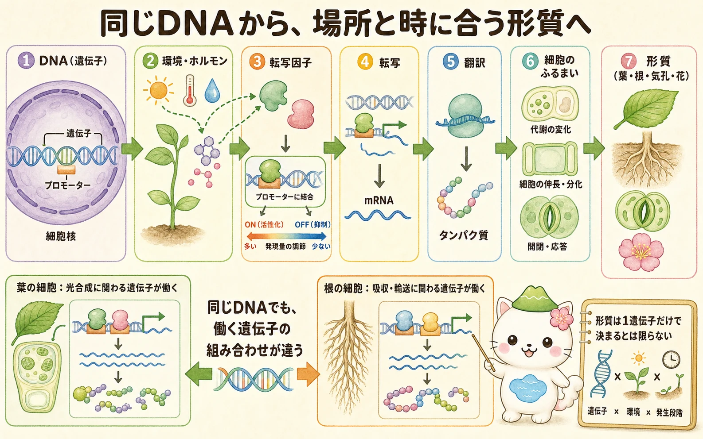
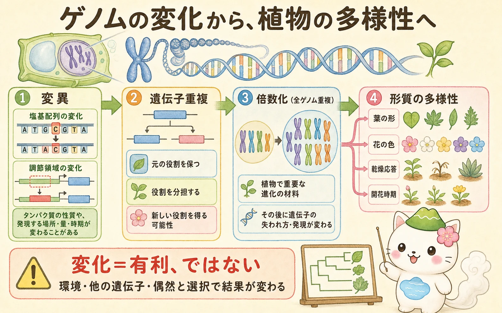

DNA・遺伝子・ゲノムを分ける
DNAは遺伝情報を記録する分子です。DNA上にあって、RNAやタンパク質などをつくるための情報をもつ単位を遺伝子といいます。ある生物がもつDNA情報全体がゲノムです。ゲノムにはタンパク質をつくる部分だけでなく、遺伝子が働く場所・量・時期を調節するDNA領域も含まれます。
「遺伝子がある」ことと、「その遺伝子が働いている」ことは別です。多くの細胞はほぼ同じゲノムを持ちますが、葉、根、気孔、花、形成層では働く遺伝子の組み合わせが違います。この差が、細胞の役割と植物の形をつくります。
遺伝子発現から形質へ
遺伝子の情報がRNAとして写し取られる過程を転写、RNAの情報をもとにタンパク質をつくる過程を翻訳といいます。この一連の利用を遺伝子発現と呼びます。タンパク質には、酵素、受容体、輸送体、細胞壁をつくる材料、ほかの遺伝子を調節するタンパク質などがあり、代謝・細胞分裂・細胞伸長・気孔の開閉といった細胞のふるまいにつながります。
遺伝子の手前には、転写が始まる場所の近くにプロモーターなどの調節領域があります。光、温度、水不足、植物ホルモンなどの信号を受けた転写因子が、こうした領域に結合し、転写を促進または抑制します。だから同じ遺伝子でも、葉では強く働き、根ではほとんど働かないことがあります。


「遺伝子＝形質」と一直線に結ばないのが大事だよ。遺伝子はまずRNAやタンパク質の量を変え、ほかの遺伝子や環境とも重なって、最終的な形や働きに影響するんだ。
遺伝子はネットワークで働く
一つの転写因子が複数の遺伝子を調節し、逆に一つの遺伝子が複数の転写因子から信号を受け取ることがあります。このつながりを遺伝子調節ネットワークとして考えます。たとえば花の器官、根の分枝、乾燥応答、概日時計では、多数の遺伝子が順番に、または同時に働きます。
このため、目に見える形質は一遺伝子だけで決まるとは限りません。同じ遺伝子の違いでも、別の遺伝子の型、発現する組織、温度や水分、発生段階によって結果が変わります。遺伝子の名前を覚えるより、どの信号がどの遺伝子群を通って、どの細胞の働きを変えるかを線で結ぶと理解しやすくなります。
ゲノムの変化と多様性
DNA配列の小さな変化は変異です。タンパク質の性質を変える場合もあれば、調節領域に起きて遺伝子が働く場所・量・時期を変える場合もあります。変異の多くは目立つ効果を持たず、役に立つかどうかも環境によって変わります。
植物では、遺伝子がコピーされる遺伝子重複や、染色体セット全体が増える倍数化（全ゲノム重複）も重要です。コピーの一方が元の役割を保つ間に、もう一方が役割を分担したり、新しい働きを得たりする可能性があります。ただし、コピーが残るとは限らず、重複の後には遺伝子の喪失や発現の変化も起こります。

進化は「新しい遺伝子が増えれば進歩する」という話ではありません。ある変化が集団に残るかどうかは、ほかの遺伝子との組み合わせ、環境、偶然、繁殖のしやすさなどに左右されます。ゲノムを読むことは、植物の形質の原因を一つに決めることではなく、可能な仕組みを証拠とともに絞り込むことです。
倍数化は「染色体が多いから強い」という意味ではないよ。遺伝子量のバランスや発現が変わるので、残るコピーも失われるコピーもあり、結果は種ごとに違うんだ。
この冊子の要点
- DNAは遺伝情報の分子、遺伝子はその一部の情報単位、ゲノムはDNA情報全体です。
- 遺伝子発現では、DNAがRNAに転写され、RNAからタンパク質が翻訳され、細胞の働きと形質につながります。
- 転写因子や調節領域は、遺伝子がいつ・どこで・どのくらい働くかを調節します。
- 変異、遺伝子重複、倍数化は植物の多様性の材料になりますが、結果は環境や他の遺伝子との関係で変わります。